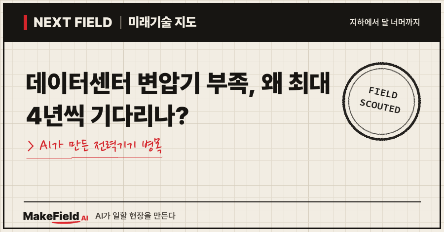
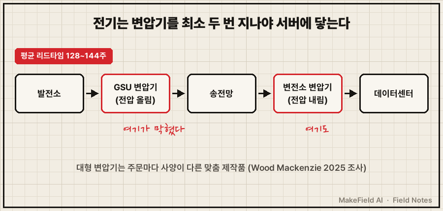
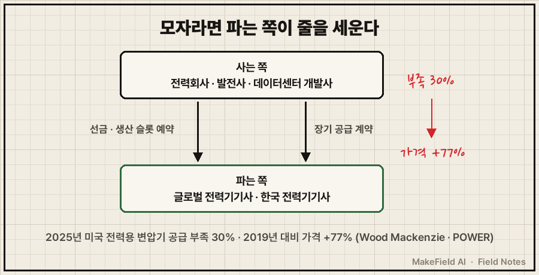
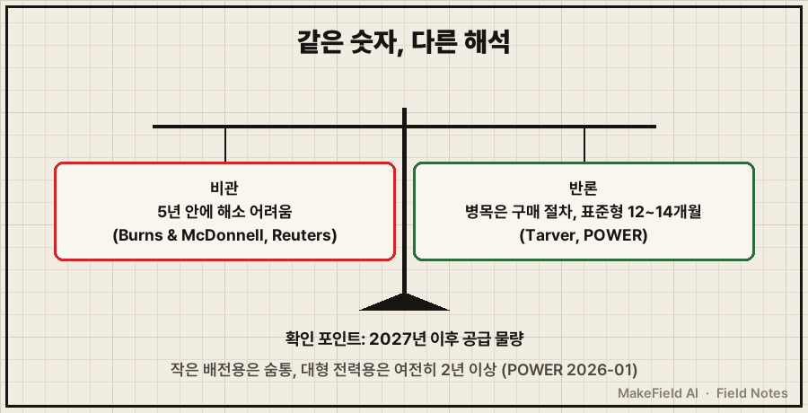

한 줄 요약: 미국에서 대형 변압기는 주문부터 인도까지 평균 2년 반(128주)이 걸리고, 일부 대용량 제품은 대기열이 최대 4년까지 늘어났습니다(Wood Mackenzie 2025 조사, Reuters 2026-05). AI 데이터센터가 전기를 끌어오려면 변압기가 꼭 있어야 하는데, 그 변압기를 만드는 공장이 수요를 못 따라가고 있어요.
AI 경쟁은 보통 칩 이야기로 시작하죠. 그런데 서버를 다 들여놓고도 전원을 못 켜는 이유가, 건물 밖에 세울 쇳덩어리 하나일 수 있습니다. 2026년 10월 기준으로, 왜 이런 일이 생겼고 그 사이 돈이 어디로 흐르는지 쉽게 풀어볼게요.
1. 변압기가 뭐길래 데이터센터가 멈추나요
변압기란 전기의 전압을 올리거나 내리는 장치다. 발전소에서 만든 전기는 멀리 보내려고 아주 높은 전압으로 올렸다가, 쓰는 곳 근처에서 다시 낮춰야 해요. 이 '올리고 내리는' 일을 전부 변압기가 합니다.
💡 변압기 — 전기의 '압력(전압)'을 바꾸는 장치. 수도관으로 치면 수압을 올리고 내리는 펌프·감압밸브 같은 역할.
데이터센터는 전력망에서 높은 전압으로 전기를 받아 건물 안에서 쓸 수 있게 낮춥니다. 이때 들어가는 대형 전력용 변압기가 없으면, 서버를 다 들여놔도 전원을 켤 수 없어요.
💡 전력용 변압기(Power Transformer) — 송전망·변전소에 들어가는 대형 변압기. 집채만 하고, 주문을 받은 뒤 사양에 맞춰 하나씩 만드는 맞춤 제작품이다.
💡 배전용 변압기 — 전봇대 위나 건물 옆에 있는 작은 변압기. 전력용보다 작고 많이 만든다.

💡 GSU(발전기 승압 변압기) — 발전기에서 나온 전기를 송전용 고전압으로 올리는 변압기. 새 발전소를 지을 때마다 필요하다.
2. 얼마나 기다려야 하나요 — 숫자로 본 병목
미국 기준 대형 변압기 평균 납기는 128주(약 2년 반), 발전기용 변압기는 144주다(Wood Mackenzie 2025년 2분기 조사, POWER 2026-01 보도). 핵심 숫자를 표로 모았어요.
💡 리드타임 — 주문부터 인도까지 걸리는 시간. 새 차 계약 후 출고까지 기다리는 기간과 같다.
| 항목 | 수치 | 출처 |
|---|---|---|
| 전력용 변압기 평균 리드타임 | 128주(약 2.5년) | Wood Mackenzie 2025년 2분기 조사(POWER 2026-01) |
| 발전기 승압(GSU) 변압기 평균 리드타임 | 144주(약 2.8년) | 같은 조사 |
| 일부 대용량 변압기 대기열 | 최대 4년 | PwC 관계자(Reuters 2026-05) |
| 2025년 미국 공급 부족률 | 전력용 30% · 배전용 10% | Wood Mackenzie(2025-08) |
| 2019년 대비 수요 증가 | 전력용 +116% · GSU +274% | Wood Mackenzie(2025-08, Reuters 2026-05) |
| 2019년 대비 가격 상승 | 전력용 +77% · GSU +45% | POWER(2026-01) |
공급 부족 30%라는 건, 필요한 대형 변압기 10대 중 3대는 그해 구할 수 없다는 뜻이에요(Wood Mackenzie, 2025). 그래서 2025년 미국 전력용 변압기의 약 80%를 수입으로 메울 것으로 추정됐습니다(Wood Mackenzie, 2025, 추정치).
3. 왜 이렇게 막혔나요
수요는 몇 년 만에 두 배 넘게 뛰었는데, 공장은 몇 년에 걸쳐서만 늘릴 수 있기 때문이다. 수요를 끌어올린 건 크게 두 가지예요.
- 데이터센터: 국제에너지기구(IEA)는 전 세계 데이터센터 전력 사용량이 2024년 415TWh에서 2030년 약 945TWh로 두 배 넘게 늘 것으로 봤어요(IEA "Energy and AI", 2025).
- 발전소·송전망 교체: 데이터센터에 줄 전기를 만들려면 발전소가 새로 생기고, 발전소마다 GSU 변압기가 필요해요. GSU 수요가 2019년 대비 274% 뛴 이유입니다(Wood Mackenzie, Reuters 2026-05 인용).
💡 TWh — 1년 동안 쓴 전기의 '양'. 1TWh = 10억kWh.
공급 쪽은 느립니다. 대형 변압기는 주문마다 사양이 다른 맞춤품이라, 공장 하나를 새로 지어도 실제 출하까지 몇 년이 걸려요. 게다가 원자재 가격도 부담입니다. Wood Mackenzie는 2025년 8월부터 구리에 50% 관세가 붙는다는 점을 가격 압력 요인으로 꼽았어요(Wood Mackenzie, 2025).
그 결과 이상한 장면도 나옵니다. Reuters에 따르면 미국 개발사들은 아직 프로젝트가 정해지지도 않았는데 공장 생산 슬롯부터 미리 사 두기도 하고, 일부는 오래된 변압기를 수리해 임시로 버티고 있어요(Reuters, 2026-05).
💡 생산 슬롯 — 공장 생산 일정표의 '빈칸'. 콘서트 좌석처럼 먼저 사 두면 그 시기에 내 물건을 만들어 준다.
4. 돈의 흐름 — 누가 사고, 누가 파나요
사는 쪽은 전력회사·발전사·데이터센터 개발사, 파는 쪽은 변압기·전력기기 제조사다. 공급이 모자라니 파는 쪽이 협상력을 갖는 '판매자 시장'이 됐어요.

| 구분 | 누가(예시) | 무엇을 하나 |
|---|---|---|
| 사는 쪽 | 미국 전력회사·발전사, 데이터센터 개발사 | 변압기 주문, 생산 슬롯 선구매 |
| 파는 쪽(글로벌) | Hitachi Energy 등 | 미국 현지 공장 신·증설 |
| 파는 쪽(한국) | HD현대일렉트릭, 효성중공업, LS일렉트릭 | 수출·미국 현지 생산 확대 |
공장 신·증설 규모는 이 정도예요.
- Hitachi Energy: 2025년 9월 미국에 10억 달러 이상 투자를 발표했고, 그중 약 4억 5,700만 달러로 버지니아주 사우스보스턴에 미국 최대 규모의 대형 변압기 공장을 짓기로 했어요(Hitachi Energy, 2025-09). 2026년 6월 착공했습니다(Hitachi Energy, 2026-06).
- 업계 전체: 주요 제조사들이 2023년 이후 북미를 겨냥해 발표한 증설만 18억 달러가 넘는다고 해요(Wood Mackenzie, 2025).
한국 기업은 이 병목의 대표적인 '파는 쪽'입니다. 2026년 2분기 기준 수주 잔고는 다음과 같아요(매일경제, 2026-08).
| 기업(예시) | 2026년 2분기 수주 잔고 | 함께 보도된 내용 |
|---|---|---|
| HD현대일렉트릭 | 84억 900만 달러(약 12조 1,855억 원) | 2분기 신규 수주 14억 4,000만 달러 |
| 효성중공업 | 17조 5,000억 원 | 미국 멤피스 초고압 변압기 공장 증설 등 약 3억 달러 투자 |
| LS일렉트릭 | 7조 1,064억 원대 | 2분기 북미 매출 약 4,000억 원 |
💡 수주 잔고 — 계약은 받았지만 아직 만들어 넘기지 않은 일감의 총액. 식당으로 치면 '밀린 주문표'.
데이터센터 쪽 수요는 숫자로도 잡힙니다. LS일렉트릭의 북미 빅테크 데이터센터 관련 수주는 2025년 약 8,000억 원에서 2026년 상반기 약 1조 2,000억 원으로 커졌어요(파이낸셜뉴스, 2026-07). 2025년 11월에는 미국 남동부 데이터센터에 525kV 변압기를 공급하는 3억 1,200만 달러 계약도 발표했습니다(Reuters, 2026-05).
※ 위 기업명은 산업 구조를 설명하기 위한 예시입니다. 특정 종목의 매수·매도를 권하는 글이 아닙니다.
5. 언제 풀리나요, 그리고 반대 의견
업계 주류 전망은 '5년 안에 다 풀리긴 어렵다'이지만, 진짜 병목은 공장이 아니라 구매 방식이라는 반론도 있다. 양쪽을 같이 보는 게 중요해요.
- 비관론: 엔지니어링 기업 Burns & McDonnell 관계자는 지금 증설로도 미국 수급 격차가 5년 안에 완전히 메워지긴 어렵다며 "수요가 줄어들 기미가 없다"고 말했어요(Reuters, 2026-05).
- 반론: 변압기 중개업체 대표 Patrick Tarver는 "진짜 부족은 없다"며, 표준형 변전소 변압기는 설계 승인 뒤 12~14개월이면 받을 수 있다고 주장했어요. 병목은 공장이 아니라 전력회사의 협력사 등록 규정·내부 결재 같은 구매 절차라는 거죠(POWER, 2026-01). 다만 POWER도 이 주장은 검증이 어렵다고 덧붙였습니다.
- 완화 신호: 배전용(작은) 변압기는 사정이 나아졌고, 2년이 넘게 묶여 있는 건 주로 대형 제품이에요(POWER, 2026-01).
정리하면, 작은 변압기는 숨통이 트이고 있지만 데이터센터·발전소에 들어가는 대형 변압기는 여전히 '줄 서는 물건'입니다. 2025년 11월에 맺은 데이터센터용 변압기 계약의 공급 시기가 2027~2029년으로 잡혀 있다는 점(Reuters, 2026-05)을 보면, 지금 주문하는 물량도 2027년 이후에야 현장에 깔린다고 보는 게 자연스러워요(추정).

자주 묻는 질문
Q. 한국에서도 변압기가 부족한가요?
이 글의 수치는 모두 미국 시장 기준이에요. 한국 기업은 이 병목에서 주로 미국에 변압기를 파는 쪽으로 등장합니다(매일경제, 2026-08). 국내 수급 상황은 이번에 확인한 출처로는 판단할 수 없어요.
Q. 데이터센터는 변압기를 못 구하면 어떻게 하나요?
생산 슬롯을 미리 사 두거나, 웃돈을 내거나, 오래된 변압기를 수리해 쓰는 방식으로 버팁니다. 전력망 연결 대기를 피하려고 자체 발전용 변압기를 따로 사는 개발사도 있어요(Reuters, 2026-05).
Q. 변압기 값은 얼마나 올랐나요?
Wood Mackenzie 조사를 인용한 POWER 보도에 따르면 2019년 대비 전력용 변압기는 77%, 발전기용(GSU)은 45% 올랐어요(POWER, 2026-01). Reuters는 지난 5년간 약 80% 올랐다는 업계 추정을 전했습니다(Reuters, 2026-05).
오늘의 용어 정리
- 변압기 — 전기의 전압을 올리고 내리는 장치
- 전력용 변압기 — 송전망·변전소용 대형 맞춤 변압기
- 배전용 변압기 — 전봇대·건물 옆의 작은 변압기
- GSU(발전기 승압 변압기) — 발전기 전기를 송전용 고전압으로 올리는 변압기
- 리드타임 — 주문부터 인도까지 걸리는 시간
- 생산 슬롯 — 공장 생산 일정표의 빈칸(선예약 대상)
- 수주 잔고 — 계약했지만 아직 넘기지 않은 일감 총액
- TWh — 1년 동안 쓴 전기의 양(10억kWh)
지난 Next Field에서 데이터센터 안의 전기 배선이 800V 직류로 바뀌는 흐름을 다뤘다면, 이번엔 그 전기가 건물 문 앞까지 오는 길목이 막힌 이야기였어요. 여러분은 이 병목이 공장 부족이라고 보시나요, 구매 방식의 문제라고 보시나요?
출처
[1] Wood Mackenzie(2025-08) — 미국 변압기 공급 부족률 30%·10%, 2019년 대비 수요 증가, 수입 비중 추정, 증설 18억 달러, 구리 관세
→ https://www.woodmac.com/press-releases/power-transformers-and-distribution-transformers-will-face-supply-deficits-of-30-and-10-in-2025/
[2] POWER(2026-01) — 2025년 2분기 리드타임 128주·144주, 가격 상승률, 'Tarver 반론'
→ https://www.powermag.com/transformers-in-2026-shortage-scramble-or-self-inflicted-crisis
[3] Reuters(2026-05, Kitco 게재) — 대기열 최대 4년, GSU 수요 +274%, 생산 슬롯 선구매, LS일렉트릭 525kV 계약, 5년 내 해소 어려움 전망
→ https://www.kitco.com/news/off-the-wire/2026-05-11/us-power-transformer-buyers-scramble-imports-factory-slots
[4] Hitachi Energy(2025-09) — 미국 10억 달러 이상 투자, 사우스보스턴 대형 변압기 공장 4억 5,700만 달러
→ https://www.hitachienergy.com/us/en/news-and-events/press-releases/2025/09/hitachi-announces-historic-1-billion-usd-manufacturing-investment-to-power-america-s-energy-future-through-production-of-critical-grid-infrastructure
[5] Hitachi Energy(2026-06) — 사우스보스턴 공장 착공
→ https://www.hitachienergy.com/us/en/news-and-events/press-releases/2026/06/hitachi-energy-breaks-ground-on-the-nation-s-largest-facility-for-the-production-of-large-power-transformers-in-south-boston-virginia
[6] 매일경제(2026-08) — 국내 전력기기 3사 2분기 수주 잔고·증설 계획
→ https://v.daum.net/v/20260801060906106
[7] 파이낸셜뉴스(2026-07) — LS일렉트릭 북미 빅테크 데이터센터 수주 규모 변화
→ https://www.fnnews.com/news/202607221031267545
[8] IEA(2025) — 「에너지와 AI」 보고서, 데이터센터 전력 2030년 전망
→ https://www.iea.org/reports/energy-and-ai/executive-summary